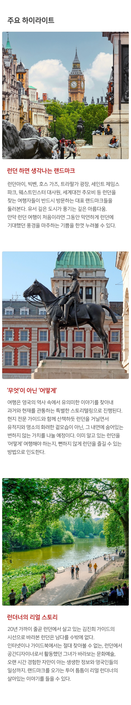
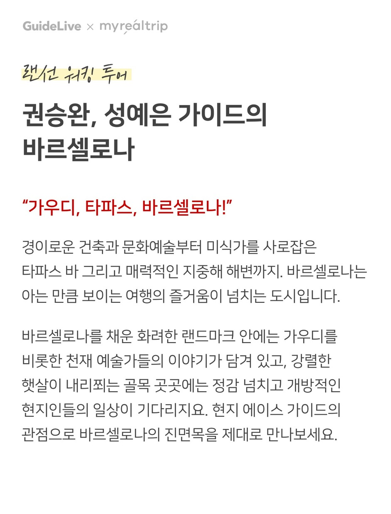

오직 여행의 본질에만 집중합니다.
랜선투어
믿을 만한 전문 가이드들과 함께 천편일률 유사한 여행에서 탈피하여
취향과 라이프스타일 시대에 맞추어 새로운 여행을 만듭니다.
-
김진희 가이드의
영국 런던-
영국 역사의 과거와 현재를 연결시키는 스토리텔링을 하고 싶어요. 런던의 명소들을 통해 현시점의 영국인들을 이해하고, 여행자인 우리에게도 어떤 의미인지 생각해볼 수 있는 기회를 준비했어요. 최대한 쉽게, 머리보다는 마음에 새겨지는 런던의 이야기를 들려드릴게요.
자세히보기
-
정희태 가이드의
파리 워킹 투어-
세상에서 가장 아름다운 도시 "Paris!" 길을 걸으며 바라만 보고 있어도 사랑에 빠질것만 같은 낭만적인 장소입니다. 거기에 숨어있는 이야기와 이들의 삶의 이야기까지 곁들여진다면 이곳의 매력에 풍덩 빠지게 되실 겁니다.
자세히보기
-
서인혁 가이드의
에스토니아 탈린-
한국에 잘 알려지지 않은 탈린의 매력을 제대로 전하고 싶어요. 현대적인 신시가지와 달리 고풍스러운 올드타운은 구석구석 허투루 지나칠 곳이 없는 곳이죠. 당장은 함께 걸을 수 없어 아쉽지만 랜선투어를 통해 제가 사랑하는 탈린을 보여드릴게요.
자세히보기
-
신이안,김수연 가이드의
체코 프라하-
동화 속 마을 체코 프라하에 숨겨진 이야기를 들으며 아기자기한 골목을 걷다 보면 프라하와 사랑에 빠지게 될거에요!
프라하의 오늘, 생생한 현장감을 그대로 느껴보세요.자세히보기
-
이진희 가이드의
프라도 미술관 확장판-
해마다 많은 이들이 프라도 미술관을 찾지만, 정작 그 작품들을 제대로 보지 못하고 나오시는 분들을 볼 때마다 늘 안타까웠어요. 대표작들을 중심으로 알면 보이는 즐거움을 선사해 드릴게요.
자세히보기
-
제나,후니 가이드의
포르투갈 포르투-
포르투갈은 한국에서도 한참 뜨고 있던 여행지였죠. 유럽에서는 이미 많은 이들의 사랑을 받는 곳입니다. 포르투는 골목 사이로 들어갈 때 더욱더 빛을 발하는데요. 그간 제가 발견했던 포르투의 진면목을 이번 랜선투어를 통해 남김없이 전해드리겠습니다.
자세히보기
-
권승완, 성예은 가이드의
스페인 바르셀로나-
'지중해의 보석' 바르셀로나 안에는 피카소, 달리, 미로, 가우디 등 수많은 예술가들이 저마다 상상력을 풀어 놓았습니다. '한 번도 안 와본 사람은 있지만 한 번만 온 사람은 없다'라는 말처럼 바르셀로나가 지닌 다채로운 매력을 즐겁고 재미있게 전달해 드릴게요.
자세히보기
-
김성모 가이드의
피카소 140주년
특별전-
피카소의 인생사를 듣다 보면 그가 작품들에 얼마나 놀라운 이야기들을 담았는지 그리고 피카소는 천재라는 것을 알게 됩니다. 영화와 같은 파란만장한 피카소의 이야기가 시작됩니다.
자세히보기
-
신기환 가이드의
내셔널 갤러리-
단순한 미술관을 넘어 영국인들의 확고한 소신과 철학을 느낄 수 있는 내셔널 갤러리의 대표작들과 함께 자기만의 관점으로 미술을 감상하는 힘을 길러보는 것은 어떨까요?
자세히보기
-
이혜원 가이드의
스페인 세고비아-
중세 시대의 아름다운 성이 있는 어느 마을로 시간 여행을 떠난 기분이 들지도 몰라요. 생생한 역사의 현장을 돌아보며 스페인을 더욱 깊게 느낄수도 있겠지요. 한편의 동화같은 마을, 세고비아를 제대로 바라볼 수 있도록 안내해 드리겠습니다.
자세히보기
-
홍콩신짱 가이드의
홍콩 릴레이 투어-
홍콩 여행에서 반드시 찾았던 랜드마크 같은 코스에서는 그 안에 보석처럼 숨어 있는 또 다른 매력을 발굴하고, 짧은 일정에 쫒겨 실제 여행 중 찾아가기 힘든 아웃도어 코스에서는 홍콩의 새로운 얼굴을 안내해 드릴게요.
자세히보기
-
이은경 가이드의
파리 몽마르뜨-
내가 진심으로 좋아하는 걸 다른 사람들도 똑같이 즐겼으면 좋겠다는 마음으로 늘 투어를 고민하고 있어요. 몽마르뜨는 그 중 1순위였고요. 예술, 역사, 풍경을 재미있게 풀어내서 한정되고 소중한 여행 시간을 가장 풍성하게 만들어드리고 싶어요.
자세히보기
- 
-

-

- 
- clear
- keyboard_arrow_left
- keyboard_arrow_right
- 1 / 12